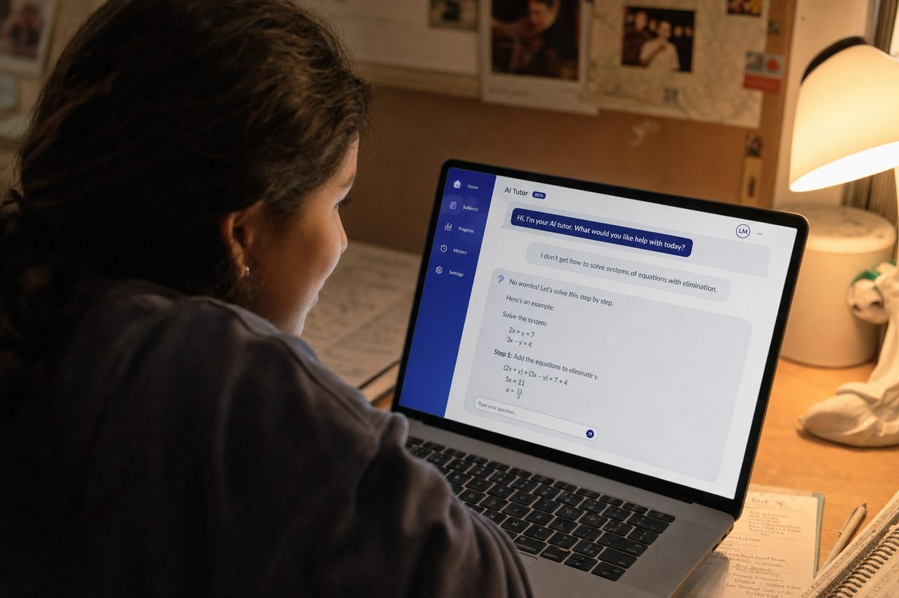
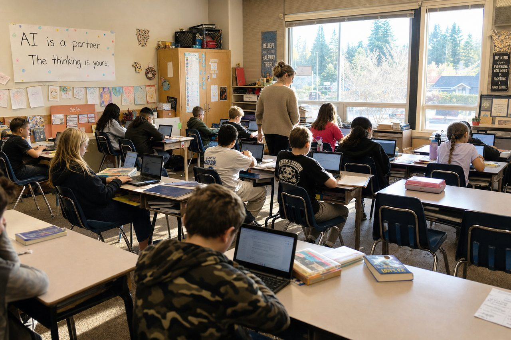
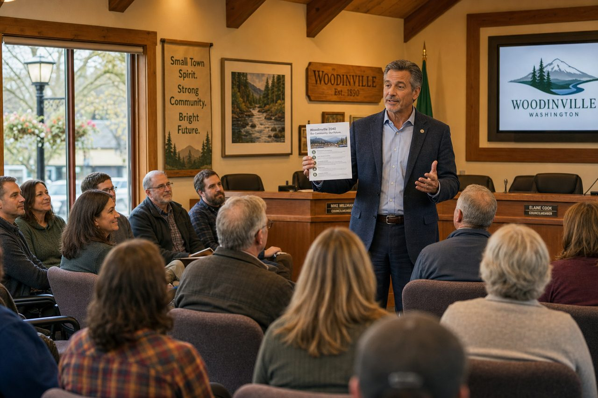
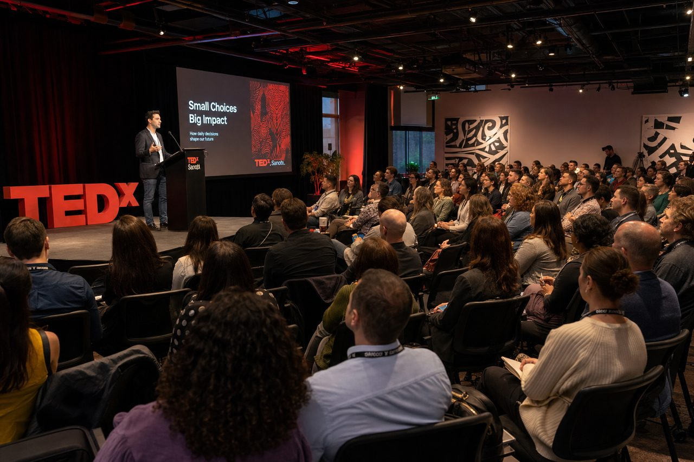
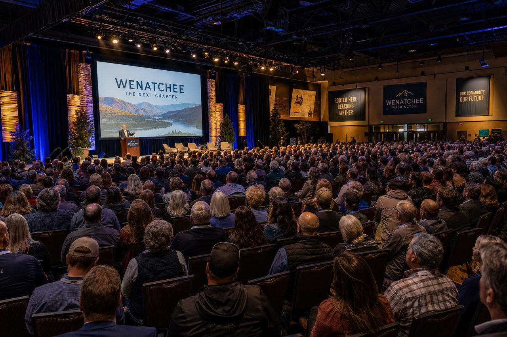
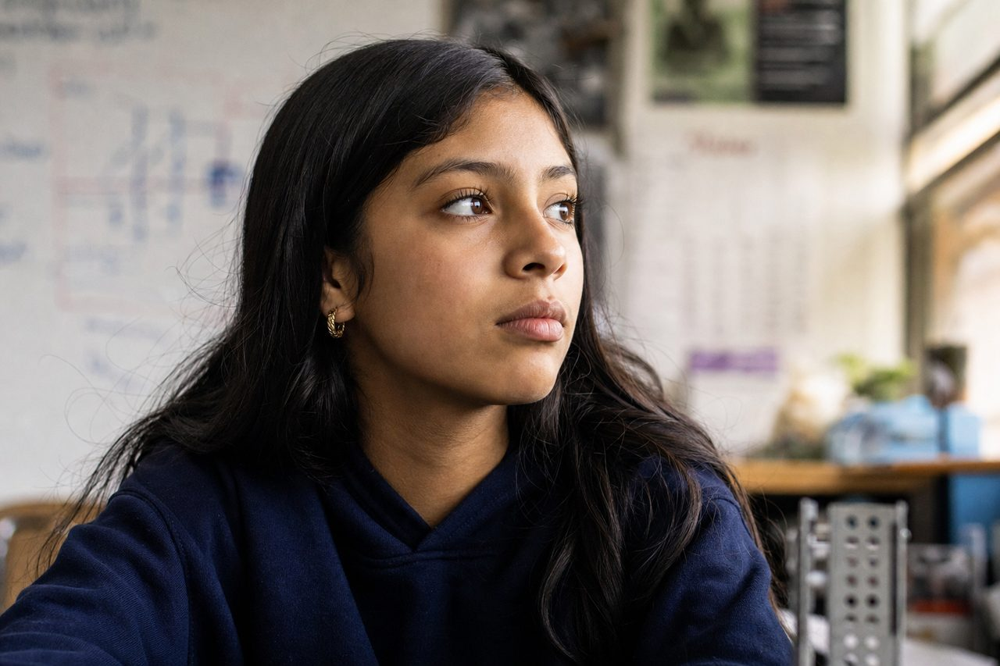
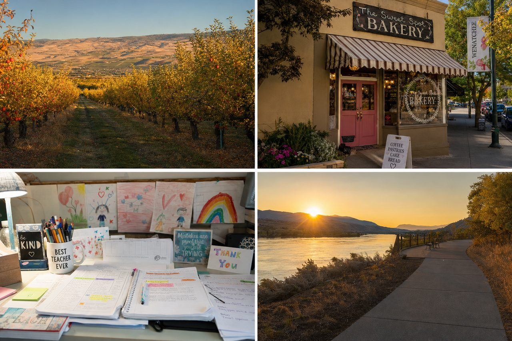
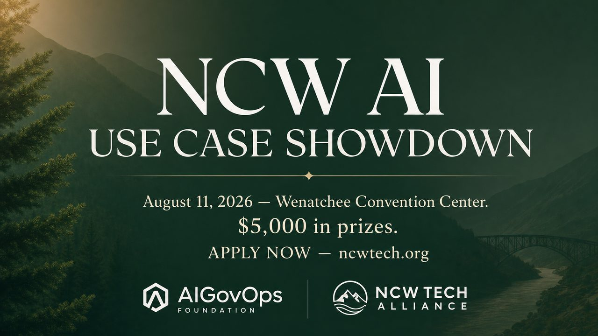

Resources
Everything from the Expo, free and open: the printable one-pagers, the slide deck, the essay, the full Q&A bank, the tools we showed, and every source we cited.
Rendered videos
The finished promo video for the AI Use Case Showdown — voice, music, lower-thirds, cinematic transitions.
English
Español
The full 34-video library is in /videos — every breakout, every mini-camp, in both languages.
Your first AI co-pilot — the 4-part recipe, 5 tools, 3 prompts to try tonight.
Download PDF 🍎AI in the classroom — the Sunday-night rescue kit and your 3-sentence policy.
Download PDF 💼Safe & sane AI for small business — the 5 jobs to give AI, your 5-sentence policy.
Download PDF 🚀From idea to working AI helper — the 4 ingredients of a good agent.
Download PDFThe Showdown trailer
A visual storyboard for the AI Use Case Showdown promo — generated from the trailer script. Drop these into Gamma, Descript, or any video editor with the matching narration to produce the final cut.
Shot 1 · 0:00–0:05
It's a Tuesday morning in Wenatchee.

Shot 2 · 0:05–0:11
Today… she gets it.

Shot 3 · 0:11–0:19
That moment — right there — is what AI was actually built for.
Shot 4a · 0:19–0:21
The burned-out teacher gets Sunday back.
Shot 4b · 0:21–0:23
The owner stops drowning in emails.

Shot 4c · 0:23–0:24
The community leader moves what nobody else had time to.
Shot 5 · 0:24–0:30
On August 11, at the Wenatchee Convention Center…

Shot 6 · 0:30–0:36
The people who figured it out come to show their work.
Shot 7 · 0:36–0:43
8 minutes to pitch. 8 minutes of hard questions.
Shot 8 · 0:43–0:47
Five thousand dollars in prizes.

Shot 9 · 0:47–0:57 · hero
Proving that North Central Washington leads with AI — or gets left behind without it.

Shot 10 · 0:57–1:04
This community doesn't wait.

Shot 11 · 1:04–1:12
It builds.

Shot 12 · 1:12–1:30
Join us.
All 14 frames are royalty-free, generated at 1280px JPEG, ready to drop into the editor of your choice. Narration script and full storyboard available in the resources package.
Cool Tools, Cool Schools
& The Rules
Master slide deck · Wenatchee · Aug 11
The Gamma deck
Every slide from the day, themed in NCW orchard green. Open it, present it, or remix it for your own school, business, or council.
Open the deck on GammaThis Morning in Wenatchee,
We're Choosing Which Future We Want
The Substack essay
Ken Johnston and Bob Rapp on Maria, Jake, and the choice North Central Washington gets to make — the written companion to the plenary.
Read on SubstackThe Sli.do question bank
The full plenary Q&A bank across five categories — positive, skeptical, hostile/policy, technical, and NCW-specific. Tap any question to see how Ken or Bob would answer it.
Tool inventory
With a one-line job and a link. Start with two or three — not all fourteen.
Citations library
We keep the receipts on our own claims, too. Every statistic in this site traces to one of these.